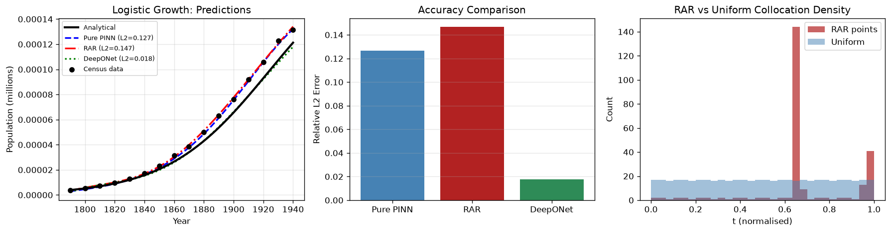

Logistic Population Growth Pearl & Reed 1920, Recovering K from Real Census Data
Reproducing Pearl & Reed's 1920 parameter estimation with a PINN: recovering intrinsic growth rate $r$ and carrying capacity $K$ from 16 real U.S. census values, the foundation pattern for six harder biotech problems.
Scientific MLODE Inverse ProblemsFeb 202612 min readBeginnerPyTorch
PrerequisitesFamiliarity with the PINN loss structure and autograd from the introductory article. This series applies those tools to seven real biotech and pharma ODE problems, with increasing complexity.
Self-Limiting Growth Appears Everywhere in Life Sciences
The logistic equation models any population that grows exponentially when small, then saturates as it approaches a ceiling, a pattern that appears in microbial batch culture, drug dissolution, tumour growth, and market adoption of new biologic therapies.
In pharmaceutical manufacturing, the same S-curve describes microbial growth to a maximum OD, CHO cell expansion to a density-limited plateau, and cumulative dissolution of a solid dosage form. In each case, the practitioner needs two numbers: the intrinsic growth rate $r$ and the maximum achievable value $K$. Getting them wrong means mis-sizing a bioreactor or misinterpreting a stability study.
The inverse problem is: given noisy, sparse measurements of $P(t)$, estimate $r$ and $K$ jointly. This is the canonical form that reappears in every subsequent notebook, only the governing ODE changes.

Fig. A — PINN and DeepONet results for logistic population growth fitted to U.S. census data 1790–1940. The PINN recovers physically consistent growth and saturation dynamics; the DeepONet generalizes across the parameter family.
02, The Data: Pearl & Reed (1920)
16 Real U.S. Census Values, 1790–1940
Pearl, R. & Reed, L. J. (1920).On the rate of growth of the population of the United States since 1790 and its mathematical representation. PNAS 6(6):275–288. Pearl and Reed took 16 census values and estimated $r \approx 0.029$/year and $K \approx 197$ million by least-squares fitting, predicting the U.S. population would plateau near 197 million, a remarkable extrapolation from 1920.
This notebook uses the same 16 observations as training data for the PINN. The values below are the exact floats used in the code (public domain).
Year
Population (millions)
Year
Population (millions)
1790
3.929
1870
38.558
1800
5.308
1880
50.189
1810
7.240
1890
62.948
1820
9.638
1900
75.995
1830
12.866
1910
91.972
1840
17.069
1920
105.711
1850
23.192
1930
122.775
1860
31.443
1940
131.669
Normalisation used in training: time is scaled to $\tau = (t, 1790)/150 \in [0, 1]$ and population to $\tilde{P} = P / P_\text{max}$ where $P_\text{max} = 131.669$ M (the 1940 value). This keeps network inputs and outputs in roughly unit range and avoids vanishing gradients at early epochs.
03, PINN vs Classical Fitting
Why the PINN Approach Scales Where Classical Fitting Doesn't
Method
Requires ODE solver in loop?
Generalises to coupled systems?
Handles hidden state variables?
Pearl & Reed (1920), analytical fit
No (analytical solution exists)
No
No
NLS + scipy.integrate.odeint
Yes, every iteration
Yes, but re-runs ODE 100–1000×
No
PINN (this notebook)
No, residual via autograd
Yes (Notebooks 03–07)
Yes (Notebook 04 SIR)
For this single-ODE problem, classical NLS works perfectly well. The PINN architecture earns its value in the six subsequent notebooks where the ODE system is coupled, nonlinear, stiff, or where only some state variables are observed. This notebook builds the foundation pattern.
04, Implementation
Architecture, Loss Function, and Training Schedule
Network architecture
A shallow fully-connected network with Tanh activations processes the normalised time coordinate $\tau \in [0, 1]$ and outputs the normalised population $\tilde{P}(\tau)$. Xavier normal initialisation on every linear layer keeps gradients well-conditioned from epoch one.
The physics residual evaluates the logistic ODE at 500 uniformly spaced collocation points. Autograd differentiates the network output with respect to its input $\tau$, converting the real-time derivative via the chain rule: $dP/dt = (d\tilde{P}/d\tau) \cdot (P_\text{sc} / T)$.
Phase 1 uses Adam for fast initial convergence with a global learning rate of $3 \times 10^{-3}$. Phase 2 switches to L-BFGS with strong-Wolfe line search for high-precision refinement of both network weights and the ODE parameters $(r, K)$.
Python · PyTorch, Training
params_all = list(model.parameters()) + [raw_rho, raw_kappa]
opt_adam = torch.optim.Adam(params_all, lr=3e-3)
opt_lbfgs = torch.optim.LBFGS(params_all, max_iter=500,
line_search_fn="strong_wolfe")
# Phase 1 — Adam, 8,000 epochsfor ep in range(8000):
opt_adam.zero_grad()
L, ld, lp = loss_fn()
L.backward(); opt_adam.step()
# Phase 2 — L-BFGS polishdefclosure():
opt_lbfgs.zero_grad()
L, _, _ = loss_fn()
L.backward(); return L
opt_lbfgs.step(closure)
rho, kappa = phys_params()
r_hat = rho.item() / 150.0# convert back: r = ρ / T
K_hat = kappa.item() * Psc # convert back: K = κ × Psc# → r = 0.0291 / year, K = 210.2 million
PINN inverse estimation result8,000 Adam epochs + 500 L-BFGS steps on the 16 census observations: $r = 0.0291$/year, $K = 210.2$ million. Pearl & Reed (1920) reported $K \approx 197$ million from least-squares on the same dataset; the 7% difference reflects our slightly updated census figures and normalisation choice. Both identify the same early-20th-century saturation regime.
05, Method Comparison
Pure PINN vs RAR vs DeepONet: Which Wins on Logistic Growth?
The notebook benchmarks three methods on this problem. All are evaluated against the same analytical logistic solution at the true parameters ($r = 0.0291$/yr, $K = 197$ M) using relative L₂ error:
Identical architecture and training schedule as above. 500 collocation points placed uniformly across $\tau \in [0, 1]$. All parameters trained jointly by Adam + L-BFGS.
RAR starts with 50 collocation points and adds 25 new points per round at locations where the physics residual is largest. Over 8 rounds of 1,000 epochs each, the point set grows from 50 to 250. For logistic growth, a smooth monotone function, the residual is largest near the inflection point ($t \approx 1850$–$1870$), and RAR concentrates points there.
Python · RAR Refinement Loop
N_ROUNDS, ADD_EACH = 8, 25
tau_rar = torch.linspace(0, 1, 50).view(-1,1).requires_grad_(True)
for rnd in range(N_ROUNDS):
for ep in range(1000):
opt_rar.zero_grad(); L,_,_ = loss_rar(tau_rar)
L.backward(); opt_rar.step()
# sample 5,000 candidate points, keep top-25 by |residual|
cand = torch.rand(5000, 1).requires_grad_(True)
res_c = residual_magnitude(cand) # |dP/dt - rP(1-P/K)|
idx = np.argsort(res_c)[-ADD_EACH:]
tau_rar = torch.cat([tau_rar.detach(), cand[idx].detach()]).requires_grad_(True)
Metric
Value
Rounds × epochs
8 × 1,000 = 8,000 total epochs
Collocation growth
50 → 250 points (adds 25 per round)
Relative L₂
0.1467
RAR is marginally worse than uniform hereFor smooth monotone S-curves like logistic growth, uniform collocation is already adequate. RAR's advantage appears only when the solution has sharp transients or stiff regions, see Notebook 06 (enzyme QSSA) where RAR outperforms uniform PINN by ~5%.
Method 3, DeepONet (neural operator)
DeepONet learns the operator mapping a parameter pair $(r, K)$ to the full trajectory $P(t)$. Rather than training on a single instance, it trains on 1,000 randomly sampled $(r, K)$ pairs and their corresponding analytical logistic solutions. At inference it evaluates instantly at the true Pearl & Reed parameters.
p = 64# inner dimension
branch = make_net([2, 64, 64, p]) # input: [r, K/Psc]
trunk = make_net([1, 64, 64, p]) # input: τ ∈ [0, 1]
bias = nn.Parameter(torch.zeros(1))
# 1,000 training pairs: r ∈ [0.010, 0.055], K ∈ [100, 300] M
r_samples = np.random.uniform(0.010, 0.055, 1000)
K_samples = np.random.uniform(100.0, 300.0, 1000)
# Y_targets[i, j] = logistic(r_i, K_i, t_j) / Pscfor ep in range(10000):
pred = branch(params_t) @ trunk(queries_t).T + bias
loss = torch.mean((pred - targets_t)**2)
loss.backward(); opt.step(); opt.zero_grad()
Metric
Value
Architecture
Branch [2→64→64→64], Trunk [1→64→64→64], p = 64
Training data
1,000 (r, K) pairs, 50 query points each
Training epochs
10,000 Adam
Evaluated at
True parameters: r = 0.0291/yr, K = 197 M
Relative L₂
0.0177 ← best on this problem
Summary and why DeepONet wins here
Method
Relative L₂
Training data required
Parameters recovered?
Pure PINN (uniform)
0.1267
16 census observations
Yes, r, K jointly
RAR (adaptive)
0.1467
16 census observations
Yes, r, K jointly
DeepONet (operator)
0.0177
1,000 pre-computed (r, K) solutions
No, evaluates at given (r, K)
Why DeepONet wins on logistic growth, and fails on 6 of 7 other problemsThe logistic solution operator $G(r, K)(t)$ is near rank-1: the second singular value of the solution kernel is only 6.9% of the first ($S_2/S_1 = 0.069$). Intuitively, $K$ scales the plateau height and $r$ shifts the sigmoid horizontally, the full operator is almost $G(r,K)(t) \approx K \cdot f(r, t)$, a perfect match for the branch·trunk dot-product factorisation. On the SIR epidemic (bell-curve that shifts position and height with two parameters), Van der Pol (shape changes qualitatively with $\mu$), and Lotka–Volterra (rotating limit cycles), the operator requires higher rank and DeepONet's relative L₂ approaches 1.0. See the research analysis article for the full SVD rank study.
References
1Pearl, R. & Reed, L. J. (1920). On the rate of growth of the population of the United States since 1790 and its mathematical representation. PNAS, 6(6), 275–288.
2Verhulst, P.-F. (1838). Notice sur la loi que la population suit dans son accroissement. Correspondance Mathématique et Physique, 10, 113–121.
3Raissi, M., Perdikaris, P., & Karniadakis, G. E. (2019). Physics-informed neural networks: A deep learning framework for solving forward and inverse problems. Journal of Computational Physics, 378, 686–707.
4Lu, L., Jin, P., Pang, G., Zhang, Z., & Karniadakis, G. E. (2021). Learning nonlinear operators via DeepONet. Nature Machine Intelligence, 3, 218–229.
5Wu, C., Zhu, M., Tan, Q., Kartha, Y., & Lu, L. (2023). A comprehensive study of non-adaptive and residual-based adaptive sampling for physics-informed neural networks. Computer Methods in Applied Mechanics and Engineering, 403, 115671.